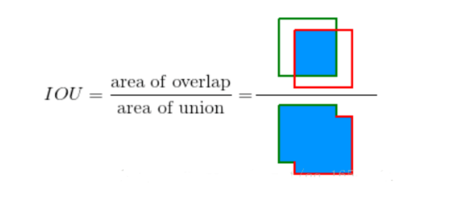
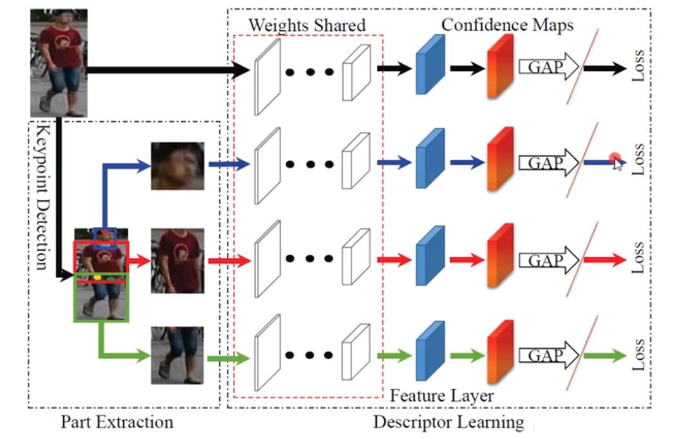
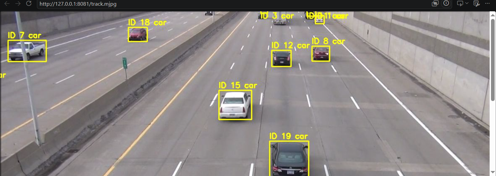
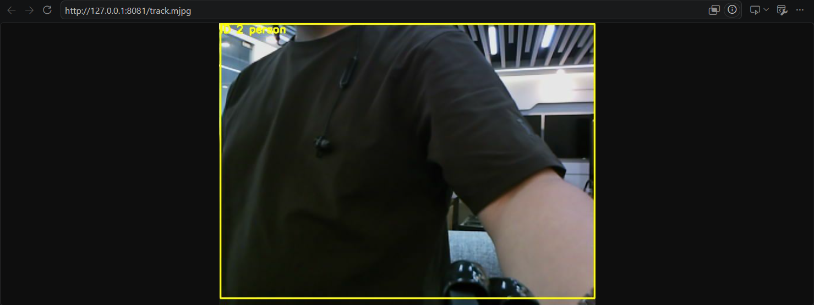
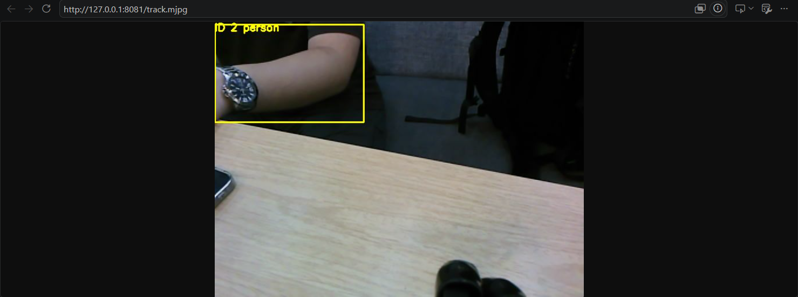

DeepSORT 多目标跟踪
检测只管"这一帧有谁"，跟踪才回答"上一帧那个是不是还是他"。卡尔曼预测 + 马氏门限 + ReID 外观 + 匈牙利匹配，四件套合体让 ID 在遮挡与交错后依然不丢。
01问题引入：为什么"每帧检测"不等于"跟踪"？
停车场入口的相机每帧都能框出 8 辆车，但管理端要问的是：昨晚 23:01 那辆白色轿车今天又来了吗？如果只做逐帧检测，两辆车交错一分开，编号就可能互换；一辆车被大卡车挡住 2 秒再出现，系统会认为"旧车消失、新车出现"，计数翻倍。
跟踪的本质是跨帧的身份维护。难点有三：① 车在动，得先"猜"它这帧大概在哪（预测）；② 猜的和检测的对不上怎么办（关联门限）；③ 两辆车长得一样怎么区分（外观 ReID）。本实验在实验箱 B2 上把 DeepSORT 全链路跑起来，双模型（检测 + ReID）双 RKNN 并行，12~15 FPS 实时输出稳定 ID。
02原理通俗讲解：一场"点名 + 认脸"的接力
把跟踪想象成老师在操场上认学生。学生在跑（运动），偶尔躲到树后（遮挡），还可能两人穿同款校服（外观相似）。DeepSORT 的流程就是一位有经验老师的点名法：
每个轨迹维护 8 维状态 (cx, cy, a, h 及其速度)。新一帧到来前，先外推位置——像老师提前把目光落在孩子跑动方向的前方。
预测有不确定性（协方差），马氏距离按"不确定度"归一化量差距。卡方 95% 门限 CHI2INV95=9.4877：超出门限的检测不许和该轨迹配对，防止张冠李戴。
按轨迹"新鲜度"从新到旧依次抢匹配——刚出现的轨迹最需要确认，老而稳定的可稍后处理。这就是 n_init=3 的来历：连续 3 帧匹配上才"转正确认"。
把候选框抠成 64×128，过 deepsort.rknn 得到 512 维向量，ImageNet 归一化后与轨迹的外观库算余弦相似度（max_dist=0.2）。遮挡后重逢，靠"长相"把 ID 接回来。
相似度矩阵交给匈牙利（scipy linear_sum_assignment）一次性求"总代价最小"的指派，避免贪心造成的连锁错配。
n_init=3 转正；连续 max_age=70 帧没匹配上才注销——给长遮挡留足复活窗口。纯 IoU 匹配（IoU 门 0.45/0.8）作为 ReID 缺失时的回退。
03关联知识点
yolov8n.rknn（9 输出、classes=[2] 车）提供每帧候选框，score_thr=0.25。
检测池 3 worker 独立 RKNN 实例 + ReID 池 2 worker，双缓冲取结果，架构一脉相承。
卡尔曼是"最优加权平均"：预测越飘，越信检测；检测越噪，越信预测。
稳定 ID + 帧时序 = 目标轨迹，可做车流统计、徘徊检测、区域入侵（衔接 ROS2 topic 输出）。
- 配置文件：
config/track_config.yaml——含 score_thr、iou_thr、classes=[2]、mode=deepsort/sort、ReID 与生命周期全部旋钮。 - 工程位置：
ros2_ws/src/xflz_eai_car1/vision/07_multi_object_tracking/。 - 回退语义：ReID 模型缺失时自动降级 sort 模式并打印告警——这是设计行为，不是崩溃。
04实验目标
track_config.yaml 调 score_thr / mode / max_dist / max_age，观察 ID 稳定性与轨迹残留的权衡。--video 文件模式与 --ros 相机模式各跑一遍，38 项单测全绿，MJPEG 流 12~15 FPS。05实验环境与准备
| 类别 | 内容 |
|---|---|
| 硬件 | 实验箱 B2（XFLZ_EAI_B2_PRO）+ HP60C 相机；NPU 双模型并发（检测池 + ReID 池） |
| 软件 | ROS2 Humble、rknn 运行时、scipy（linear_sum_assignment）、numpy、OpenCV |
| 模型 | yolov8n.rknn（9 输出）+ deepsort.rknn（ReID 嵌入 512 维） |
| 数据集 | 测试视频 test.mp4（车辆场景）+ HP60C 实时流；classes=[2] car 仅跟踪车 |
| 关键配置 | config/track_config.yaml：score_thr=0.25、iou_thr=0.45、mode=deepsort、max_dist=0.2、max_iou_distance=0.8、nn_budget=100、min_confidence=0.6、pool.workers=3、stream_name=track.mjpg |
| ROS 隔离 | 相机模式需 export ROS_DOMAIN_ID=2，避免与其他实验的域冲突 |
pytest 单模块验证（不依赖相机），再逐个接入模型、视频、相机，最后才调跟踪参数——一次只引入一个变量。06动画讲解：交错车辆的 ID 保卫战
07互动讲解：匹配代价矩阵推演台
操作建议：把"混淆度"从 35% 拉到 90%——轨迹与检测的外观成本矩阵逐渐趋同，观察正确配对如何塌成"互换（ID switch）"；再切到 sort 回退态，看纯 IoU 匹配在交叉场景的天然短板；最后收窄 max_dist 使门限变严，体会"宁可丢失也不认错"的保守策略。
08实操步骤
cd ~/ros2_ws/src/xflz_eai_car1/vision/07_multi_object_tracking pytest tests/ -v tests/test_kalman.py ..... [ 6/38] tests/test_matcher.py ........ [18/38] tests/test_tracker.py ........... [31/38] 38 passed
python src/app.py --video test.mp4 [app] detect=yolov8n.rknn(9out, classes=[2]) reid=deepsort.rknn(512d) [tracker] mode=deepsort score_thr=0.25 iou_thr=0.45 frame 150: tracks=4 ids=[7, 12, 18, 19] switches=0
# 终端 1：拉起相机 ros2 launch ascamera hp60c.launch.py # 终端 2：切到独立域再启动跟踪 export ROS_DOMAIN_ID=2 python src/app.py --ros http://<board-ip>:8080/track.mjpg fps=14 active=6 lost=1 (waiting, age=12/70)
detect: score_thr: 0.25 iou_thr: 0.45 classes: [2] # 只跟车 track: mode: deepsort max_dist: 0.2 min_confidence: 0.6 max_iou_distance: 0.8 nn_budget: 100 # 外观库容量 pool: workers: 3 # 检测池 reid: pool_workers: 2 # ReID 池 stream: stream_name: track.mjpg
[warn] deepsort.rknn not found, fallback to SORT (IoU only) # 属设计内降级：确认模型文件路径后再切换回 mode: deepsort
🛠️ 指导书步骤截图（实验指导书 · 3 图）



✅ 实验现象截图（实验指导书 · 3 图）



09重点与易错点
| 现象 | 根因 | 处理 |
|---|---|---|
| ID 频频更换 | ReID 回退 sort / max_dist 过松过紧 | 看告警；max_dist 0.2 起步微调 |
| 遮挡后再现是新 ID | max_age 太短或外观库没留住 | max_age ≤70；核查 nn_budget |
| 两车交错互换 ID | 外观太像 + 门限过松 | 调低混淆源（角度/分辨率），收紧 max_dist |
| 轨迹残留"幽灵车" | max_age70 过长或阈值过低 | 降 score_thr 反查误检，缩 max_age |
| 启动打印 fallback sort 告警 | deepsort.rknn 缺失/路径错 | 恢复模型文件，属设计内降级 |
| 帧率远低于 12 FPS | 池未并行 / 单实例串行 | pool.workers=3、ReID 池 2、双缓冲 |
| --ros 无帧 | 未拉相机或 domain 冲突 | hp60c.launch.py + ROS_DOMAIN_ID=2 |
| 推理随机崩溃 | 多个进程共享同一 RKNN 实例 | 每 worker 必须独立加载自己的 RKNN |
- ✅ 38 项单测全绿（Kalman 预测、门限、匈牙利、生命周期分支）。
- ✅ test.mp4 上视频模式 + 相机模式各一次，ID 稳定无频切。
- ✅ 至少完成一组 deepsort vs sort 的 ID 切换次数对照表。
- ✅ MJPEG :8080/track.mjpg 稳定 12~15 FPS。
10总结与思考
双 RKNN + 四环节关联 + 双池并行 + 配置化调参。
卡尔曼给先验，检测给后验，门限决定谁有资格参与融合。
症状 → 环节 → 单变量，三步定位 ID 类问题。
ID switches 次数、MOTA 直觉、fps 三个数一起看。